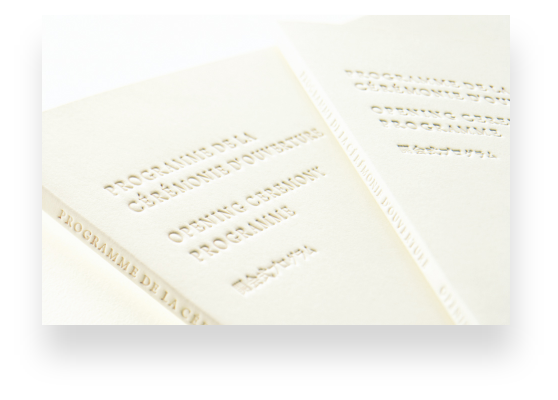
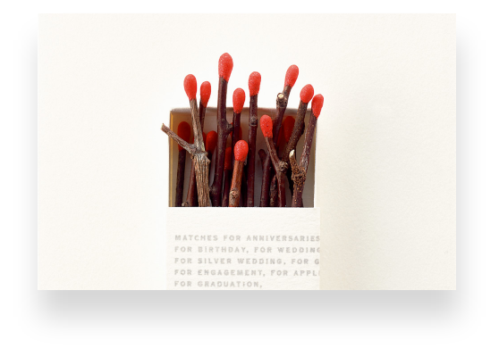
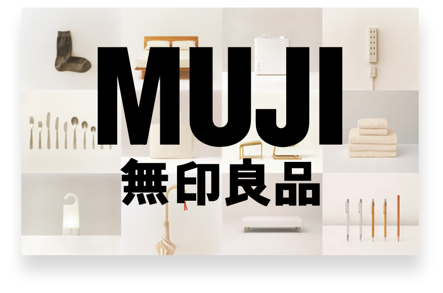

HAPTIC
RE-DESIGN


그의 디자인 작품에서 촉각을 중요하게 다루는 이유는 디자인이 색과 형태로만
전달되는 것이 아니라, 사람의 오감을 자극하여 감각을 풍부하게 하는 것이
디자인의 중요한 역할이라고 생각하기 때문이다.
그는 익숙한 것을 미지화하여 새롭게 탐구하는 것도 창조라고 보았다.
새로움은 없던 것을 창조하는 것이 아니라 이미 있는 것에서 앎이
미치지 못 했던 부분을 깨닫고 새롭게 인식하는 것이라고 하였다.
「何もないという意味は、何かを受け入れることでいっぱいになる可能性を抱いているという意味だ。空のボウルを否定的な意味で受け入れず、
むしろいっぱいになる可能性として見ることにコミュニケーションの力学が動く。
“아무 것도 없다는 의미는 무언가를 받아들임으로써 가득 찰 수 있는 가능성을 품고 있다는 의미다. 텅 빈 그릇을 부정적인 의미로 받아들이지 않고
오히려 가득 차야 할 잠재력으로 본다는 데에 커뮤니케이션의 역학이 움직인다.”

가장 일본다운 브랜드 무인양품(無印良品, MUJI)은 하라 켄야의 디자인 철학을 단적으로 보여준다. 무인양품은 1980년 일본 그래픽 디자인계의 전설 다나카 잇코(田中一光)와 일본 유통 산업의 견인차 역할을 한 츠츠미 세이지(堤清二)에 의해 소매 유통업으로 처음 시작했다. 하라 켄야 디자인 철학의 핵심인 ‘공(空, emptiness)’의 개념은 무인양품의 7000품목을 통해 현실화되고 있다. 이는 18세와 60세에 맞는 테이블을 따로따로 만드는 것이 아니라 ‘18세나 60세 모두 이 테이블은 나에게 어울린다’고 생각하게 만드는 것이다. 이것이 서양의 심플(simple)과 그가 말하는 ‘공’의 결정적 차이다. 무인양품은 단순히 디자인이 뛰어난 브랜드 이상의 가치를 담고 있다. 그것은 물질만능의 시대에서 더불어 사는 세상을 꿈꾸며, 소비자에게 올바른 삶의 가치관을 전하려 하기 때문이다. 아울러 일본 최고 디자이너 간의 세대교체를 통해 디자인 DNA를 전수하며 후카사와 나오토(深沢直人) 같은 톱 클래스 디자이너들과 힘을 모아 나라를 대표하는 브랜드로 키워내고 있다는 데 있다.
「デザインとは価値を作る事です。」
“디자인이란 가치를 만들어 가는 일입니다.”